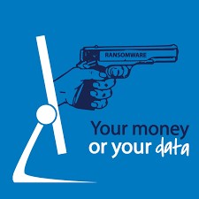

aanvallers en verdedigers
welke soorten zijn er?

Computercriminaliteit
Computercriminaliteit, of cybercrime, kent verschillende vormen, waaronder diefstal, fraude, afpersing, en inbraak (hacken). Verschillende gespecialiseerde beveiligingsbedrijven zijn actief in de bestrijding van diverse vormen van computercriminaliteit. Het nemen van passende maatregelen kan veel problemen helpen voorkomen. In geval van confrontatie met computercriminaliteit wordt aangifte bij de politie aanbevolen, omdat dergelijke criminaliteit ernstige gevolgen kan hebben.
Diefstal van data kan op diverse manieren plaatsvinden, zoals hacken of toegang krijgen tot een database. De gestolen data heeft vaak financiële waarde en kan worden doorverkocht. Het misbruik van persoonlijke gegevens voor criminele activiteiten wordt identiteitsfraude genoemd. Afpersing kan plaatsvinden wanneer criminelen dreigen persoonlijke gegevens openbaar te maken tenzij er wordt betaald.
Fraude is een vorm van oplichting waarbij bedrog wordt gepleegd, vaak met als doel om mensen geld afhandig te maken. Voorbeelden van fraude zijn phishing, waarbij doelbewust misleidende informatie wordt gebruikt, en spyware die bankgegevens kan achterhalen. Online shops, social media en online dating kunnen ook platforms zijn waar fraude voorkomt, zoals betaling voor producten die nooit worden ontvangen. Slachtoffers bouwen soms online relaties op met personen die zich anders voordoen en vragen vervolgens om geld, bijvoorbeeld voor een verzonnen vliegreis.
Criminelen gebruiken malware, zoals ransomware, voor afpersing. Ze dreigen gevoelige gegevens openbaar te maken of delen, bijvoorbeeld naaktfoto's, om slachtoffers te dwingen tot betaling. Vaak maken ze gebruik van gestolen data uit databases om hun slachtoffers te benaderen met dreigmails. Hoewel de dreiging soms niet gesteund wordt door concrete bewijzen, proberen ze hun slachtoffers angst aan te jagen in de hoop dat ze betalen.
Computervredebreuk
Hacken, ook wel computervredebreuk genoemd volgens de wet, is een ernstige bedreiging voor cybersecurity. Het betekent ongeoorloofd binnendringen in een computersysteem of netwerk, ofwel digitaal inbreken. Het maakt niet uit of de inbraak gebeurt via geavanceerde hackmethoden of door simpelweg een wachtwoord af te kijken; beide zijn strafbaar. Pogingen tot hacken, zelfs als ze mislukken, zijn eveneens verboden. Het bezitten van hulpmiddelen met het doel om te hacken, zoals keyloggers of hacksoftware, is strafbaar, hoewel het doel soms lastig vast te stellen is. Slechte beveiliging van een website is geen rechtvaardiging voor hacken, maar kan wel verwijtbaar zijn. Melding maken van beveiligingslekken is toegestaan en wordt zelfs aangemoedigd.
Inbreken in een computer is al strafbaar als computervredebreuk, zelfs zonder verdere acties. Als je na de inbraak gegevens kopieert, verwijdert, wijzigt, of op andere wijze schade toebrengt, pleeg je een extra strafbaar feit.
Etnisch hacken
Niet alle hackers zijn crimineel; er zijn ook ethische hackers die bijdragen aan internetveiligheid. Ethische hackers melden beveiligingslekken aan bedrijven, waardoor deze de kans krijgen om de problemen op te lossen. Bedrijven waarderen vaak dergelijke meldingen en belonen de hackers. In sommige gevallen kan het openbaar maken van een beveiligingslek echter noodzakelijk zijn om gebruikers te waarschuwen. Veel hackers volgen een aanpak genaamd "responsible disclosure", waarbij ze het beveiligingslek eerst melden aan de verantwoordelijke partij en het later openbaar maken. Zo worden bedrijven gestimuleerd om snel op te treden, en de hacker krijgt erkenning voor zijn ontdekking.
Ethische hackers overtreden de wet door te hacken, maar worden meestal niet vervolgd vanwege het dienen van een publiek belang, namelijk het verbeteren van de internetveiligheid. Ze vallen onder persvrijheid wanneer ze informatie publiceren over ernstige beveiligingsproblemen. Er gelden echter regels, zoals hacken alleen als het de enige manier is om een misstand aan te tonen en het beperken tot dat doel. Onnodige diefstal van gegevens of hacken kan nog steeds leiden tot vervolging.
Spionage en oorlogsvoering
Zero days zijn nog niet ontdekte kwetsbaarheden en worden beschouwd als digitale wapens. Ze worden verhandeld voor tienduizenden tot honderdduizenden euro's. Criminelen, beveiligingsbedrijven en overheden hebben interesse in zero days. Beveiligingsbedrijven kopen ze om lekken te dichten, terwijl overheden ze gebruiken voor spionage of om vijandelijke systemen plat te leggen. Het gebruik van zero days is echter omstreden, omdat het de kwetsbaarheid in stand houdt en het internet onveiliger kan maken. In Nederland mag de overheid zero days alleen onder strikte voorwaarden gebruiken.